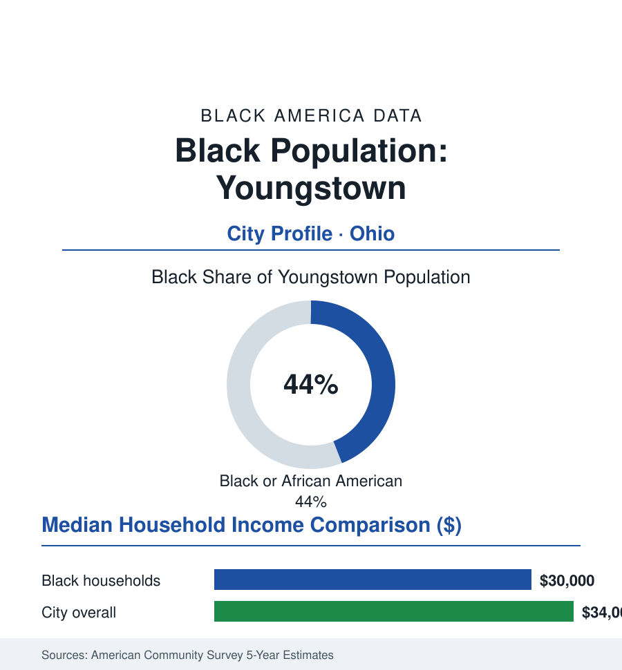

Black Cities
Black Youngstown: 26,000 People in the City That Named Deindustrialization
Youngstown's Black community, about 26,000 and 44% of the city, lived the steel collapse that made the city's name an economics term — and runs the city that remains.

Youngstown's Black community numbers approximately 26,000 people — about 44% of the city's 60,000 residents — in the city whose name became the American language's shorthand for industrial collapse ('Youngstown' as a diagnosis, quoted from presidential campaigns to economics papers). Black Youngstowners built their community in the steel mills of the Mahoning Valley, absorbed Black Monday and the shutdown era at the epicenter, and today constitute the near-majority that elects the city's leadership and staffs what replaced the mills. This profile reads the hardest-hit city's numbers.
Steel, Black Monday, and the Valley
The community's formation followed the mills: Republic Steel, Youngstown Sheet and Tube, and U.S. Steel's Valley works drew Black Southerners through both migrations into the East and South side neighborhoods (the Sharon Line, the Idora district, Briar Hill's edges) — with the steelworkers' union (the USW's Valley locals) as the era's economic engine and its seniority ladder the Black industrial middle class's machinery. The autumn of 1977 brought Black Monday — Sheet and Tube's Campbell Works closure announcement, five thousand jobs in a day — opened the shutdown sequence (the Brier Hill and Ohio Works followed within years) that cut the Valley's steel employment from the tens of thousands to the hundreds and the city's population from its 170,000 peak toward today's third of it. The Black community's exposure was arithmetic: the newest seniority in the mills, the last-hired-first-fired mechanics of the layoff order, its neighborhoods' housing equity evaporating with the tax base — the Youngstown of the national record (the planned-shrinkage debates of the 2000s, the Youngstown 2010 plan's famous right-sizing candor) governed through all of it by a political class increasingly drawn from the community that stayed.
Governance and the Institutional Record
Black Youngstown's political record is the profile's center: a city council long substantially Black, the mayor's office held by Black leadership across key eras of the shrinkage decades, the school board and county offices integrated into the community's institutional base, and the churches of the East and South sides (congregations that doubled as the Valley's mutual-aid system through the shutdown winters — the food and fuel ministries of the record) anchoring the civic map. Youngstown State University (the city's accessible university, its Black enrollment in the low teens, its workforce programs aimed at the successor economy) and the Eastern Gateway community-college presence carry the education tier; the cultural record includes the Butler Institute's city, the DeYor's stages, and a boxing heritage (Youngstown's line of champions) the sports pages keep. The institutional challenge the data state plainly: every one of these organizations operates on the shrunken base — the endowment-per-capita, the parish roll, the enrollment — of a city a third its former size.
The Economic Ledger and the Successor Economy
The ACS numbers are among the hardest in this atlas: city median household income in the mid thirty-thousands, Black median around thirty thousand, poverty rates in the thirties citywide and higher for Black families — the arithmetic of a metro that lost its wage engine and kept its people. Homeownership around the middle ranges (the housing stock cheap beyond national comparison — the five-figure median values of the assessor's data, ownership attainable and wealth-building throttled by the same price), and the workforce in the successor stack: the hospital systems (Mercy Health's Valley operations), YSU and the schools, the public sector, the warehouse-and-logistics tier along the interstates, and the small manufacturing remnant (the steel service centers and fabricators of the trade data). The revitalization record of the recent decades — the downtown arena and amphitheater, the business-incubator tech bets (the additive-manufacturing institutes of the federal record placed here deliberately), the land bank's thousands of returns — is tracked in the planning data against the neighborhood maps, where the equity argument of every Rust Belt city in this section is run at its most concentrated: the investment follows the downtown; the population lives on the East and South sides.
Reading Youngstown's Numbers
Forty-four percent of a city that lost two-thirds of itself, governing what remains and arguing — in the data, every budget cycle — for the successor economy to arrive on its streets: Youngstown is this atlas's limiting case of the industrial story, the community that absorbed the worst of the century's economics and is, demographically and politically, simply the city now. The mills named it. The neighbors kept it. The census counts the keepers.
More in Black Cities
Black Atlanta: Population, Distribution, and Growth of a Black Metropolis
Metro Atlanta holds more than two million Black residents — roughly one in three, second only to New York. The suburban distribution, migration history, and composition of Black Atlanta in the census data.
Black New York: The Largest Black Population in America
The New York metropolitan area holds about 3.4 million Black residents — more than any metro in the nation — and the city itself about two million. The census profile.
Black Washington: The District and the Metro
The Washington metro holds about 1.6 million Black residents, and the District itself — long a majority-Black city — now records a Black share near 41 percent. The census profile.
Source: U.S. Census Bureau, 2020 Census and American Community Survey 5-year estimates; City of Youngstown; Youngstown State University and Mahoning Valley historical records.